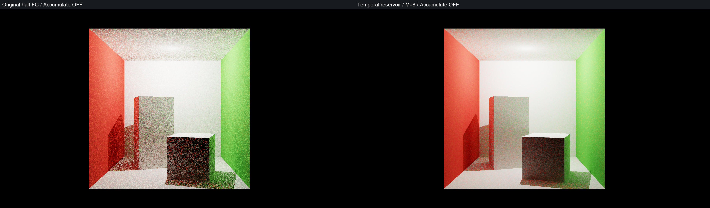
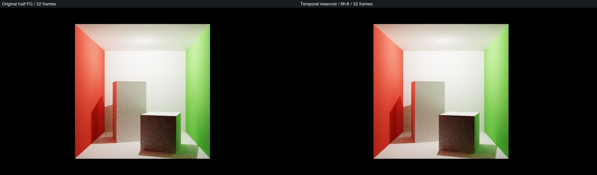
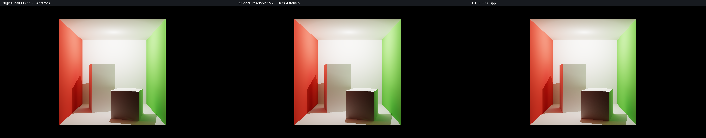

入口：DDGI → Final gather → Enabled → ReSTIR temporal (experimental)。默认关闭；Reservoir candidates 默认 8，范围 1–32。Accumulate 默认仍开，可独立关闭。直接光、镜面 FG、probe 更新和半分辨率重建沿用原实现；不启用 NRD。
范围：这是时间重采样的第一步，不是完整 Lumen ReSTIR Gather 或 DDGI Resampling 论文复现。没有邻域空间复用、运动重投影。相机或场景变化会清空 reservoir。固定屏幕像素各自保存历史；半分辨率 jitter 的四种实际像素位置使用各自的历史。
本次结果：未累积单帧 MSE（16 帧均值）降低约 71%，GPU 整图从 1.135 ms 增至 1.472 ms。加上 Accumulate 后，32 帧 MSE 约为原方案的 3.02 倍，16384 帧仍高约 4.1%。因此这版减少了单帧噪声，但没有改善累计效率，不建议替换当前默认 FG＋Accumulate。整体平均亮度基本一致；仍须区分有限样本残余误差与系统偏差。
Visibility → DDGI（ProbeUpdate → 全分辨率 PrimaryShading → 半分辨率 HalfGather）→ Reconstruct → Accumulate → Display。时间 reservoir 位于 HalfGather 的漫反射路径中；全分辨率时位于 PrimaryShading 内。没有增加独立空间滤波 pass。
每个实际像素保存 selectedSeed、M、W、lastFrame（16 字节，1080p 约 31.6 MiB；关闭不分配）。每次采样产生 1 条新 FG 路径，并重放最多 1 条历史路径的完整随机数序列，包括次级光源采样；重新求交和着色，避免直接使用过期光照。当前半分辨率最多追踪 2×960×540 条漫反射 FG 路径；还可能有着色中的阴影射线。因此本版主要验证采样正确性，并不承诺加速。
已有 FG 返回 C=f·cosθ·Li/pdf，令 t=max(luminance(C),10⁻⁶)。新样本权重 t，旧 reservoir 权重 t_old·W_old·min(M_old,M_max−1)。按权重随机选择一条路径，更新 W=Σw/(M·t_selected)，输出 C_selected·W。它在原始随机样本空间中重采样，不能再次乘 cosθ/pdf。完整随机流重放维持次级随机光照与被选择样本的一致性。M 限制的是有效候选数，不是每帧射线数。
与原先报告相同场景、点光源和显示变换（+3EV/ACES/sRGB）；预热 2560 帧，固定左上采样，jitter 关闭。先旁路 Accumulate 采集 16 帧，再分别累积 16384 帧；PT 复用同场景 65536 spp 未降噪参考。原始 FG 收敛参考为此前的 65536 帧。这里的 reservoir 已预热；短时累积图不代表从空历史启动。16384 帧仅用于初版验证，不等同于之前完整 65536 帧收敛实验。
| 方案 | 16384 帧 MSE | HDR-FLIP | 未累积单帧 MSE（16 帧均值） | 全图 GPU ms | HalfGather ms |
|---|---|---|---|---|---|
| Original half FG | 9.728884e-07 | 0.046654 | 0.0001892706 | 1.135 | 0.277 |
| Temporal reservoir / M=8 | 1.012432e-06 | 0.047319 | 5.480316e-05 | 1.472 | 0.609 |
长期平均亮度比（时间 reservoir / 原 FG）：1.000000。指标与有限样本误差见 原始结果。单帧方差降低不代表同等时间累计误差一定降低：时间复用使帧间相关，而且本版每次会重追历史路径。



运行验证：481×271 奇数尺寸、jitter 四相位、全/半分辨率、开关 ReSTIR/FG、镜头移动与累积重置均通过；M=1 与关闭重采样的最大绝对差 4.47e-08（浮点舍入量级）。编译及实际 D3D12 shader 执行通过。当前实验只验证 Lambert Cornell；其他材质与动态场景尚未做画质评估。